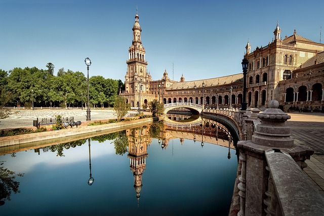

Exploring the magic in Spain
Spain, country located in extreme southwestern Europe. It occupies about 85 percent of the Iberian Peninsula, which it shares with its smaller neighbour Portugal.
Spain, country located in extreme southwestern Europe. It occupies about 85 percent of the Iberian Peninsula, which it shares with its smaller neighbour Portugal.
France, country of northwestern Europe. Historically and culturally among the most important nations in the Western world, France has also played a highly significant role in international affairs, with former colonies in every corner of the globe

Germany, country of north-central Europe, traversing the continent’s main physical divisions, from the outer ranges of the Alps northward across the varied landscape of the Central German Uplands and then across the North German Plain.